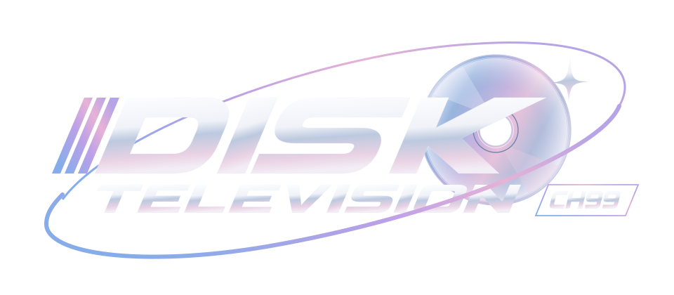

CH 99 / INFORMAÇÕES AO ESPECTADOR
Termos e privacidade
Edição de 10 de novembro de 2026.
Termos de uso
A DISK TELEVISION é uma experiência pessoal de programação linear simulada. Não vende acesso, não exige conta e não oferece arquivos de vídeo para download. A grade usa o relógio do dispositivo e pode apresentar atrasos, reprises e indisponibilidade.
Ao selecionar “Sintonizar CH 99”, você concorda com estes termos e com os Termos de Serviço do YouTube. A reprodução utiliza os Serviços de API do YouTube e o player oficial. Não utilize esta aplicação para contornar bloqueios, anúncios, restrições geográficas ou direitos dos titulares.
As obras audiovisuais, marcas e interfaces de terceiros pertencem aos respectivos titulares. A presença de uma URL no catálogo não transfere direitos, não representa patrocínio ou endosso do YouTube e não garante disponibilidade ou permissão de uso em todo contexto. O código e a arte originais da emissora são distribuídos sob a licença MIT, sem licenciar as obras de terceiros.
O catálogo inclui conteúdo com violência, tensão e temas adultos. A experiência não é dirigida especificamente a crianças. A disponibilidade dos serviços externos pode mudar. Não há garantia de funcionamento em todo aparelho ou de transmissão ininterrupta.
Privacidade e dados
Antes de sintonizar, o código da aplicação carrega apenas seus próprios arquivos estáticos. O botão de sintonia inicia conexões com o YouTube/Google para carregar a API e o player. Você pode não iniciar essas conexões deixando de sintonizar ou saindo da página.
O código original da DISK TELEVISION não solicita login, nome, e-mail, credenciais ou acesso autorizado à sua conta YouTube. Não cria perfis, não usa um backend próprio, não grava histórico em localStorage/IndexedDB e não inclui analytics próprio. Guarda somente o modo de apresentação A/B/C no sessionStorage da aba, para conservar sua escolha durante a sessão; se esse armazenamento for bloqueado, usa memória como alternativa. A preferência pode ser alterada a qualquer momento e não é enviada a um servidor próprio. Programa atual e estado de áudio ficam em memória; o fechamento da aba encerra a preferência de sessão.
O YouTube e o Google recebem as requisições do player, que podem incluir endereço IP, dados de navegador/dispositivo, URL de origem e eventos de interação/reprodução. Esses terceiros podem exibir conteúdo e anúncios e usar cookies ou tecnologias semelhantes, conforme suas próprias configurações e políticas. A aplicação não inspeciona nem controla esses cookies e não recebe suas credenciais. Consulte a Política de Privacidade do Google para entender processamento, controles e direitos relativos a esses dados.
Quando hospedado no GitHub Pages ou em outro provedor, o acesso aos arquivos também passa por esse serviço de hospedagem, que pode processar dados de conexão conforme suas próprias políticas. Isso é separado do código original da emissora. Este aviso não promete que terceiros deixem de coletar dados.
Não existe conta ou banco de dados próprio da emissora para excluir. Para interromper novas requisições, feche a página. Para apagar cookies ou dados mantidos por terceiros, use os controles de privacidade do navegador e da sua conta Google/YouTube. Não há autorização OAuth concedida à DISK TELEVISION para revogar.
Responsável por esta instância e contato
Esta instância pessoal é publicada pela conta GitHub caiomwn, não pelo YouTube ou Google. Para contato técnico, correções de catálogo ou assuntos sobre este aviso, utilize as Issues públicas do repositório DISK TELEVISION. Não envie senhas, tokens ou dados sensíveis nesse canal.
Este aviso descreve a configuração atual desta instância. Alterações que acrescentem coleta de dados, serviços, analytics ou armazenamento exigem revisão deste aviso.